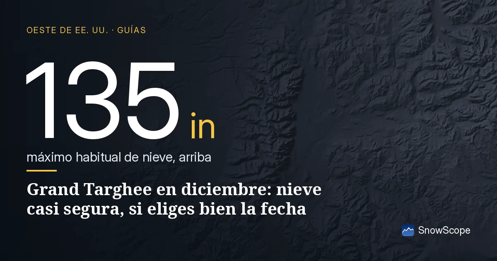

Grand Targhee en diciembre: nieve casi segura, si eliges bien la fecha
La altitud de media montaña de Grand Targhee garantiza nieve profunda casi todos los inviernos en diciembre: 118 cm en un 15 de diciembre típico, con cada invierno de los últimos 46 años alcanzando al menos 50 cm. La verdadera decisión para tu bolsillo no es si habrá nieve, sino qué semana reservas.
Consulta la previsión de nieve en tiempo real de Grand Targhee Resort en la app SnowScopeEspesor de nieve, alertas de nieve polvo y mapa 3D, gratis.
Qué profundidad y cuándo
A media montaña, alrededor de 2,658 m, espera 81 cm el 1 de diciembre, luego 118 cm el 15, y 131 cm para Navidad. La cumbre, cerca de 3,000 m, alcanza 179 cm a mediados de diciembre. Incluso en un invierno flojo (uno de cada diez), media montaña mantiene 79 cm el 15.
Principios de diciembre es una apuesta segura: el 54% de los inviernos tienen buena nieve la primera semana. Para la segunda semana sube al 76%, y la tercera y cuarta suben al 89% y 93%. La nieve suele llegar a principios de octubre, así que la base es gruesa cuando llegas.

Timing del precio del forfait
Los forfaits de un día en línea cuestan entre 125 y 180 dólares según la fecha; en ventanilla cuesta 10 dólares más. La clave es que las fechas anteriores a las vacaciones de diciembre están en la parte inferior. La estación abre el 20 de noviembre y aplica precios de vacaciones del 24 de diciembre al 3 de enero, cuando pagas el máximo.
Eso deja casi cuatro semanas de principios a mediados de diciembre con mejores tarifas. Los pases de varios días salen más barato por día conforme compras más, así que un viaje de tres o cuatro días reparte el coste más. Las cuentas favorecen reservar principios de diciembre en línea si tu horario lo permite.

Cómo se compara cerca
Snow King, la colina de Jackson, comienza en 100 dólares al día pero promedia solo 71 cm a media montaña el 15 de diciembre, con buena nieve solo en el 87% de los inviernos. Entrada más barata, base más delgada.
Jackson Hole Mountain Resort, la estación más grande del valle, promedia 93 cm a media montaña la misma fecha. Eso es 23 cm menos que Targhee a la misma altitud. En nieve de diciembre, Targhee supera a ambas.
Dónde alojarse
Targhee está encima de Driggs en el lado de Idaho de las Tetons. La mayoría de visitantes se basan en Driggs (más cerca y tranquilo) o Jackson (más opciones, pero al otro lado del Teton Pass). El paso es pronunciado y cierra en tormentas, así que comprueba las condiciones antes de conducir.
No comparamos costes de alojamiento, pero el lado de Idaho tiende a ofrecer menos opciones pero más asequibles. Jackson tiene más variedad a todos los niveles de precio.
¿Es la nieve tan fiable como antes?
Mayormente sí, pero con un ligero decline. En inviernos de 1980-81 a 1994-95, media montaña promedió 130 cm el 15 de diciembre. En los últimos 15 inviernos, eso bajó a 102 cm. Sin embargo, todos los inviernos en ambos períodos se mantuvieron por encima de 50 cm.
La temporada pasada fue floja, llegando con solo 62 cm a mediados de diciembre a media montaña. Eso es suficiente para esquiar pistas acondicionadas, pero notablemente más delgado que los típicos 118 cm. Principios de diciembre esta temporada está en solo 5 cm ahora, así que la montaña se rellenará a lo largo del mes.
Qué traer
Diciembre en Targhee es frío y alto. La cumbre de la montaña está en 3,000 m y recibe nieve constante. Empaca capas base, una chaqueta impermeable y gafas para el viento. Las pistas superiores se mantienen esquiables bien entrada la primavera por la altitud y acumulación total.
Principios de diciembre puede ver ciclos de congelación-deshielo en pistas orientadas al sur a media montaña si el sol es fuerte. Esquía más alto o busca orientación norte si quieres corn consistente. A mediados de diciembre, el frío sostenido congela la base.
Consejos para esquiadores
- Reserva tus fechas de principios de diciembre en línea al menos dos semanas antes para asegurar el precio más bajo del forfait; las ventanillas walk-up cuestan 10 dólares más y tienen menos certeza en disponibilidad.
- Si planeas dos o más días, compra un forfait o pase de varios días: el coste por día baja significativamente comparado con forfaits de un día.
- Esquía a media montaña o más alto en principios de diciembre cuando la base es delgada; los extra 150 m de elevación marcan una diferencia de 38–50 cm en profundidad de nieve y estabilidad.
- Antes de conducir desde Jackson, comprueba las condiciones del Teton Pass: cierra en nieve fuerte y tormentas. El lado de Idaho es más pronunciado de lo que podrías esperar.
- Lee el pronóstico del Bridger-Teton Avalanche Center antes de esquiar fuera de pista, especialmente en pistas empinadas orientadas al norte donde pueden formarse planchas después de nieve fresca.
Sobre estas cifras
Los espesores de nieve de las estaciones son la nieve más profunda en las pistas altas en la fecha indicada; son estimaciones para una zona, no una medida en un punto. Las previsiones pueden cambiar. Consulta siempre el boletín oficial de aludes antes de salir fuera de pista.
Boletines oficiales de aludes: Bridger-Teton Avalanche Center
Citar este informe
Para investigación, docencia o prensa: cifras y gráficos reutilizables libremente bajo CC BY 4.0 con esta cita.
SnowScope (2026), Grand Targhee en diciembre: nieve casi segura, si eliges bien la fecha, https://snowscope.app/blog/es/2026/11/grand-targhee-december-snow-and-ticket-prices.html, consultado el 2026-11-14
SnowScope (Atlas Labs). (2026, November 14). Grand Targhee en diciembre: nieve casi segura, si eliges bien la fecha. SnowScope snow reports. https://snowscope.app/blog/es/2026/11/grand-targhee-december-snow-and-ticket-prices.html
BibTeX
@misc{snowscope2026grandtargheedecembersnow,
author = {{SnowScope (Atlas Labs)}},
title = {Grand Targhee en diciembre: nieve casi segura, si eliges bien la fecha},
year = {2026},
month = nov,
howpublished = {\url{https://snowscope.app/blog/es/2026/11/grand-targhee-december-snow-and-ticket-prices.html}},
note = {Published 2026-11-14 13:57 UTC; accessed 2026-11-14}
}· CC BY 4.0 · Métodos, datos y herramientas →
Sigue Grand Targhee Resort
Gratis: un aviso cuando llega la nieve y la previsión cada mañana.